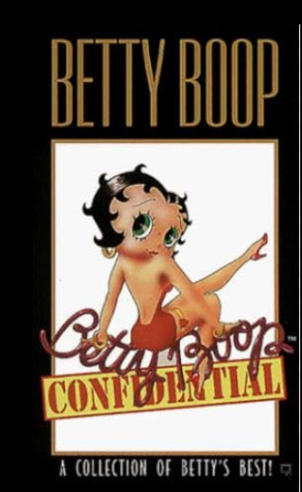

various
various
various minutes
TITLE: Betty Boop Confidential TEXT PLACEHOLDER 079
You've known a few women who have been saddled with the task of going through life and being taken seriously with a "Betty Boop" voice. This isn't a burden you would envy.
Aside from having to consciously suppress a bit of an accent, you yourself have been graced with a voice that sounds like a radio announcer when you code-switch into formal mode. You've had several strangers inform you that "you should be in radio", at which point you will sometimes let them know that you did, in fact, used to be a DJ and sound engineer and announcer on a radio station.
As a sound engineer, you were responsible for recording most of the station announcements and promotional spots for music coming to town. You read plenty of these yourself when there was no one else to read them, but you also worked with plenty of people with various types of voices, most of whom did not sound like typical voice professionals. These were frequently your favorite people to work with. It felt good to get people with unusual voices and accents on the air reading these promotional spots, even if it took a bit more patience and polishing.
Over the course of that job you were able to record people with thick regional or foreign accents, people with speech impediments or developmental disabilities, transgender people at various points of their journey trying out new ways of speaking, people with unusually low-pitched or high-pitched voices, et cetera.
You weathered occasional controversies for these choices. One of the women's shows on your station insisted on playing only "women's voices" on their show, and there was some controversy over whether using the voice of a trans-woman counted as a woman's voice. You also had some sponsors and promoters and occasionally even programmers complain when someone with an "imperfect" radio voice was used to promote one of their events. Often you would record an alternate version yourself to appease them but leave the original as an alternative to play. You were pretty passionate about making sure to get diverse voices on the radio, and you're still pretty proud of your successes in doing so.
Time to choose something different: